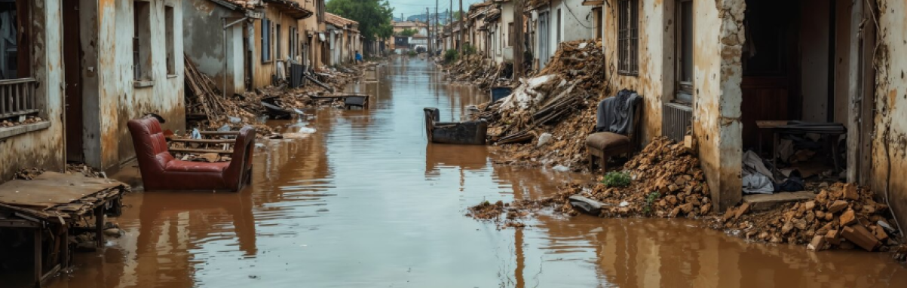

Contra a enchente,
a melhor defesa é a informação
Como agir durante a enchente
Riscos e cuidados imediatos
Cuidados pós enchentes
Possíveis doenças transmissíveis após enchentes

Em tempos de enchente, a solidariedade salva vidas. Se você pode, doe roupas, alimentos, água e itens de higiene. Se você precisa de ajuda, não tenha vergonha de pedir — juntos, podemos superar qualquer tempestade. Procure os pontos de doação e receba o apoio que merece.
Como agir durante a enchente
- 1. Desligue imediatamente o disjuntor de energia - Isso evita choques elétricos e curtos-circuitos. Não toque em aparelhos ou fios com as mãos molhadas.
- 2. Saia de cômodos que estejam começando a alagar - Vá para andares superiores ou pontos mais altos da casa, como camas ou móveis firmes.
- 3. Evite andar descalço - A água pode ter objetos cortantes, vidro ou até corrente elétrica se fios estiverem expostos.
- 4. Proteja seus documentos e itens importantes - Guarde RG, CPF, cartões e remédios em sacos plásticos e mantenha tudo em uma mochila pronta para evacuação.
- 5. Não tente salvar móveis pesados ou eletrodomésticos - Sua vida é mais importante. Priorize segurança.
- 6. Feche o registro de gás, se possível - Isso evita vazamentos e explosões em caso de alagamento na cozinha ou áreas com aquecedores.
- 7. Se a água continuar subindo, abandone a casa com segurança - Avise familiares, leve sua mochila com itens essenciais e vá para um abrigo público ou casa de conhecidos fora da área de risco.
Caso seja fora de casa
- 1. Evite atravessar áreas alagadas, mesmo a pé - A água pode esconder buracos, bocas de lobo abertas ou fios elétricos caídos. Além disso, a força da correnteza pode te derrubar.
- 2. Se estiver de carro, pare em local seguro e alto - Nunca tente atravessar ruas com água acumulada. Seu carro pode ser arrastado facilmente.
- 3. Procure abrigo elevado imediatamente - Entre em comércios, escolas ou prédios públicos que estejam fora da zona de risco. Suba para andares superiores se necessário.
- 4. Evite pontes, passarelas instáveis e margens de rios - A estrutura pode estar comprometida ou prestes a ceder com o volume da água.
- 5. Fique atento aos alertas oficiais no celular ou rádio - Siga as orientações da Defesa Civil ou autoridades locais. Nunca confie apenas na aparência da rua ou da água.
- 6. Não fique embaixo de árvores, postes ou estruturas frágeis - Chuvas fortes podem causar quedas ou descargas elétricas.
Riscos e cuidados imediatos
- 1. Desligue a energia elétrica - Se a água começar a entrar, desligue o disjuntor.
- 2. Evite contato com a água - Pode estar contaminada e esconder buracos ou objetos cortantes.
- 3. Saia de áreas de risco - Como encostas, margens de rios e porões.
- 4. Suba para lugares seguros - Andares mais altos ou locais secos e protegidos.
- 5. Não dirija em ruas alagadas - Seu carro pode ser arrastado mesmo com pouca água.
- 6. Avise familiares e vizinhos - Compartilhe informações e ajude pessoas com dificuldade de mobilidade.
- 7. Leve só o essencial - Documentos, remédios, roupas secas, celular e uma lanterna.
- 8. Animais peçonhentos - Ratos, cobras e aranhas se escondem da água invadindo casas.
- 9. Choques elétricos - Fios e tomadas molhados representam risco grave.
- 10. Desabamentos - A água enfraquece estruturas de casas e muros.
Cuidados pós enchentes
- 1. Espere a Defesa Civil liberar o retorno à casa - Certifique-se de que o local está estável e não há risco de desabamento ou fios expostos.
- 2. Não ligue a energia elétrica imediatamente - Somente religue o disjuntor depois de garantir que tudo esteja seco e seguro. Se possível, peça ajuda de um eletricista.
- 3. Use botas e luvas para a limpeza - A água da enchente pode conter esgoto, produtos tóxicos e resíduos perigosos.
- 4. Descarte alimentos e remédios que tiveram contato com a água - Mesmo embalados, eles podem estar contaminados.
- 5. Ferva a água para beber e cozinhar - Isso elimina microrganismos causadores de doenças. Se puder, use água mineral.
- 6. Lave e desinfete a casa com água sanitária - Misture 1 copo de água sanitária para cada balde de 20 litros de água. Limpe pisos, paredes, móveis e utensílios.
- 7. Evite deixar entulhos acumulados - Eles atraem insetos e animais transmissores de doenças como leptospirose e dengue.
- 8. Verifique rachaduras e danos na estrutura da casa - Não permaneça em locais com risco de desabamento.
- 9. Busque ajuda se necessário - Entre em contato com a Defesa Civil, órgãos públicos, ONGs ou projetos sociais da sua cidade para obter alimentos, roupas, abrigo ou atendimento médico.
Possíveis doenças transmissíveis após enchentes
- Leptospirose: causada por contato com água ou lama contaminada, com sintomas como febre, dor de cabeça, dor muscular (principalmente nas panturrilhas), náuseas e vômitos.
- Hepatite A: transmitida por água ou alimentos contaminados, com sintomas como febre, dor abdominal, náuseas, cansaço, icterícia (coloração amarelada da pele e olhos) e fezes esbranquiçadas.
- Diarreia e dor abdominal: podem ser sinais de doenças diarreicas agudas, como cólera, hepatite A ou febre tifoide, frequentemente associadas ao consumo de água ou alimentos contaminados.
- Feridas e coceira na pele: podem indicar infecções cutâneas causadas pelo contato com água contaminada ou pela presença de animais peçonhentos.